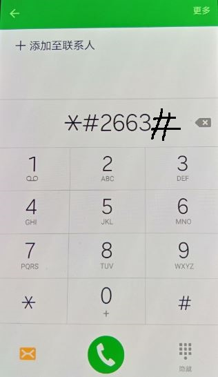

我们都是地球人,大家相亲相爱互相尊重帮助,不要打架不要打仗不要伤害,世界永远和平美好.
联系我
Copyright © 2016.
www.kerne1.org
All rights reserved.
先来说说怎么解决的---拨号界面输入*#2663#,然后点第一个按钮,成功解决.

s6屏幕大小有5.1寸,适合单手拿着,厚度6.8毫米轻薄不重,背部整体一致性与白色更显洁净
美观.很是喜爱这款手机.
前几天又买了S6,由于在找刷机包来刷root和twrp时误刷入了别的机型的包,导致屏幕左右
颠倒,就是按钮在左(右)边,你要点击右(左)边相对应的位置.
今天无意中看到
别人解决了这个问题
,按照他的操作,又能开心的使用手机了
参考网址：http://bbs.gfan.com/forum.php?mod=redirect&goto=findpost&ptid=7927781&pid=277786681
说明：No
创建时间：2019.9.13-21.14
修改时间: